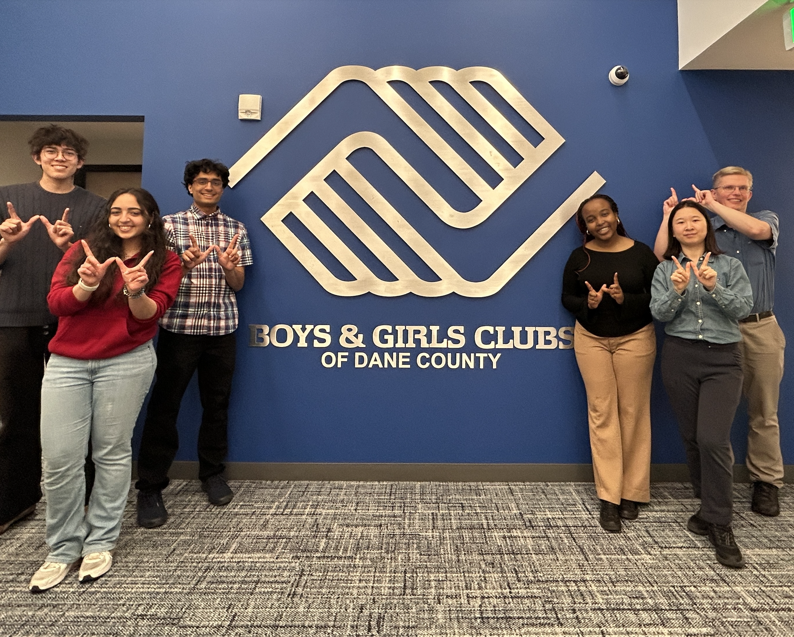

Data Analytics Club - Project Manager
03/2025 – Present
I first joined BioKind out of a general interest in data analysis, then gradually grew from a club member to Team Lead and later Project Manager.
- In this role, I guide team members through different stages of data analysis, review their work, and help identify additional charts needed for final deliverables.
- I strengthened my skills in R, ggplot2, GeoPandas, data visualization, accessibility-minded chart design, public speaking, and self-directed learning.
- Most importantly, I learned to not be scared to ask questions or reach out, turning analysis into clear presentations for real community partners, including presenting our findings in person to leaders at the Boys & Girls Clubs of Dane County.